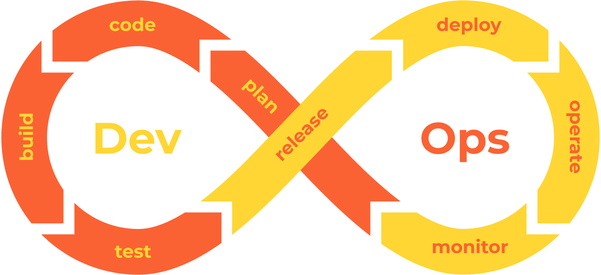

7.0 Introduction
{kind=link}
Learning Objectives
By the end of this chapter, you will be able to:
Explain how CI/CD pipelines transform software development workflows
Implement a complete CI/CD pipeline from scratch using GitHub Actions
Apply security and best practices to production-grade pipelines
Troubleshoot common pipeline failures and optimize performance
Design multi-environment deployment strategies
Integrate monitoring and rollback procedures
Prerequisites: Basic understanding of Git, Python programming, and command-line operations.
What are CI/CD Pipelines?
CI/CD (Continuous Integration/Continuous Deployment) pipelines are automated workflows that transform your code from development to production. Think of them as an assembly line for software - each station performs a specific task, ensuring your code is built, tested, and deployed reliably.
Why do we need them?
Automate repetitive tasks and eliminate human error
Catch bugs early when they’re 100x cheaper to fix
Deploy changes safely and quickly to stay competitive
Enable rapid experimentation and innovation
Note
Real-world analogy: Imagine a car manufacturing assembly line. Each station has a specific job (install engine, paint, quality check). Similarly, CI/CD pipelines have stages (build, test, deploy) that your code passes through automatically.
Continuous Integration (CI)
What is CI?
CI is the practice of frequently merging code changes into a shared repository (like git) - often multiple times per day. Each merge triggers an automated process to build and test the code.
The Three Pillars of CI:
Automated Builds: Your code is automatically compiled into runnable software
Automated Testing: A comprehensive test suite runs to catch bugs before they reach users
Frequent Integration: Developers merge code changes regularly (multiple times daily)
Example Workflow:
Developer writes code locally
Commits and pushes to shared repository (Git)
CI system automatically detects the change
Code is built and all tests run
If tests pass, code is ready for the next stage
If tests fail, developer is notified immediately
Developer fixes issues and repeats the process
Warning
Avoiding “Integration Hell”: Without CI, developers might work in isolation for weeks, then try to merge everything at once. This often leads to conflicts and bugs that are hard to trace - hence the term “integration hell.”
Continuous Deployment (CD)
What is CD?
CD automatically deploys code that passes all tests directly to production. It’s the next step after CI, completing the automation pipeline.
Two Flavors of CD:
Continuous Deployment: Automatic deployment to production (e.g., Netflix deploys thousands of times per day)
Continuous Delivery: Automatic deployment to staging, manual approval for production (e.g., banking software with regulatory requirements)
Key Components:
Automated Deployment: No manual intervention needed - like having a robot that can safely install updates
Production-like Testing: Test in environments that mirror production (same database, same server setup)
Rollback Procedures: Automatic rollback if issues are detected (like an “undo” button for deployments)
Feature Flags: Deploy code without activating features, enabling gradual rollouts

Note
Real-world example: Think of how your smartphone gets automatic updates. The app developers use CD to push updates that have been thoroughly tested, and if something goes wrong, they can quickly roll back to the previous version.
Pipeline Stages Explained
A typical CI/CD pipeline includes the following stages:
Stage 1: Source Control
What happens: The pipeline starts when code is committed to a version control system (e.g., Git)
Real example: Developer Sarah fixes a bug in the login system and pushes her code to GitHub
Stage 2: Build
What happens: Code is compiled and dependencies are fetched
Real example: The system downloads all required libraries (like React, jQuery) and compiles Sarah’s JavaScript into optimized code
Stage 3: Testing
What happens: Automated tests verify the code works correctly
Types of testing:
Unit tests: Test individual functions (does the login button work?)
Integration tests: Test how components work together (does login connect to the database?)
Load testing: Test performance under stress (can 1000 users login simultaneously?)
Security testing: Check for vulnerabilities (are passwords properly encrypted?)
Stage 4: Artifact Storage
What happens: The tested code is packaged and stored securely
Real example: Sarah’s bug fix is packaged as version 2.1.3 and stored in the company’s artifact repository
Stage 5: Deployment to Staging
What happens: Code is deployed to a production-like test environment
Real example: The new login system is deployed to staging.mycompany.com where QA team can test it
Stage 6: Approval (Optional)
What happens: Stakeholders review and approve the changes
Real example: Product manager tests the new login flow and approves it for production
Stage 7: Release to Production
What happens: Code goes live for end users
Real example: Sarah’s bug fix is now live on mycompany.com for all customers
Stage 8: Monitoring
What happens: System monitors the new code’s performance
Real example: Monitoring shows login success rate improved from 94% to 99.2%
Warning
Pipeline Failure Protocol: If any stage fails (e.g., tests don’t pass, security scan finds vulnerabilities), the pipeline stops immediately and alerts the development team. This prevents buggy code from reaching users.
Popular CI/CD Tools and When to Use Them
Choosing the right CI/CD tool can make or break your automation strategy. Here’s a practical decision guide:
For Small Teams/Startups or really tech companies:
GitHub Actions: Perfect if your code is already on GitHub, free for public repos, $4/month for private
GitLab CI/CD: Great all-in-one solution with built-in Git hosting, generous free tier
For Enterprise on prem
Azure Pipelines or Github Enterprise: Ideal for Microsoft-centric environments, enterprise security features
Jenkins: Highly customizable, self-hosted, thousands of plugins available
TeamCity: JetBrains’ solution, excellent for Java/Kotlin projects
Gitlab Enterprise: Advanced features for large teams, integrates with GitLab’s ecosystem
Cloud Platform Integration:
AWS CodePipeline: Native integration with Amazon Web Services, pay-per-use
Google Cloud Build: Best for Google Cloud Platform projects, strong container support
Azure DevOps: Seamless integration with Microsoft Azure, enterprise features
Decision Framework:
┌─ Are you already on GitHub? ──── YES ──── GitHub Actions
│
├─ Need enterprise security? ───── YES ──── Azure DevOps / Jenkins
│
├─ Want everything integrated? ─── YES ──── GitLab CI/CD
│
└─ Maximum customization? ──────── YES ──── Jenkins
Benefits of CI/CD
Understanding the benefits helps justify the investment in CI/CD infrastructure:
Speed & Efficiency
Faster time-to-market: Features reach customers in days instead of months
Reduced deployment time: From hours of manual work to minutes of automation
Example: Meta deploys code changes 10,000+ times per day vs. traditional monthly releases
Quality & Reliability
Early bug detection: Issues caught in development cost 100x less to fix than in production
Consistent testing: Every code change goes through the same rigorous validation
Reduced downtime: Automated rollbacks mean faster recovery from issues
Team Collaboration
Reduced “works on my machine” problems: Standardized environments for all developers
Better visibility: Everyone sees the same pipeline status and deployment history
Knowledge sharing: Pipeline configuration serves as documentation
Cost Reduction
Less manual effort: Developers focus on features instead of repetitive deployment tasks
Fewer production incidents: Automated testing catches issues before they impact users
Resource optimization: Automated scaling and deployment reduces infrastructure waste
Tip
ROI Example: A company spending 20 hours/week on manual deployments can save $50,000+ annually by implementing CI/CD (assuming $50/hour developer cost).
Common Challenges & Solutions
Challenge 1: “Our tests take too long”
Solution: Implement test parallelization and smart test selection
Example: Run only tests related to changed code for faster feedback
Challenge 2: “Pipeline keeps breaking”
Solution: Start simple, add complexity gradually
Example: Begin with basic build + test, then add security scans and performance tests
Challenge 3: “Team resistance to change”
Solution: Start with pilot project, demonstrate value with metrics
Example: Show 90% reduction in deployment time and 50% fewer bugs
Challenge 4: “Legacy systems are hard to automate”
Solution: Implement CI/CD for new features while gradually modernizing legacy components
Example: Create APIs for legacy systems to enable automated testing
Getting Started Checklist
Ready to implement CI/CD? Follow this practical checklist:
Week 1: Foundation
Choose your CI/CD tool based on team needs
Set up basic pipeline: source → build → test
Write your first automated test
Configure notifications for pipeline failures
Week 2-3: Testing
Add unit tests for critical functions
Implement integration tests
Set up test environment that mirrors production
Add code quality checks (linting, security scans)
Week 4-6: Deployment
Create staging environment
Implement automated deployment to staging
Add monitoring and logging
Test rollback procedures
Week 7-8: Production
Deploy first feature using the pipeline
Monitor performance and gather feedback
Gradually increase deployment frequency
Train team on troubleshooting pipeline issues
Note
Success Metrics to Track:
Deployment frequency (aim for multiple times per day)
Lead time (from commit to production)
Mean time to recovery (how quickly you fix issues)
Change failure rate (percentage of deployments causing problems)
Key Takeaways
CI/CD pipelines are essential for modern software development because they:
Automate the boring stuff - Let machines handle repetitive tasks while humans focus on creativity
Catch problems early - Fix bugs when they’re cheap and easy to resolve
Enable rapid innovation - Deploy features quickly and safely to stay competitive
Improve team happiness - Reduce stress from manual deployments and late-night fixes
Remember: Perfect is the enemy of good. Start with a simple pipeline and improve it over time. The goal is progress, not perfection.
Warning
Common Mistake: Don’t try to implement everything at once. Start small, prove value, then expand. Many teams fail because they over-engineer their first pipeline.
Next Steps: In the following sections, we’ll dive deeper into specific tools and hands-on implementation examples.